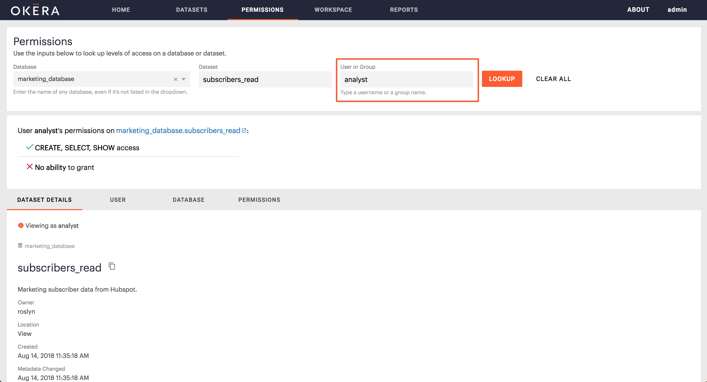
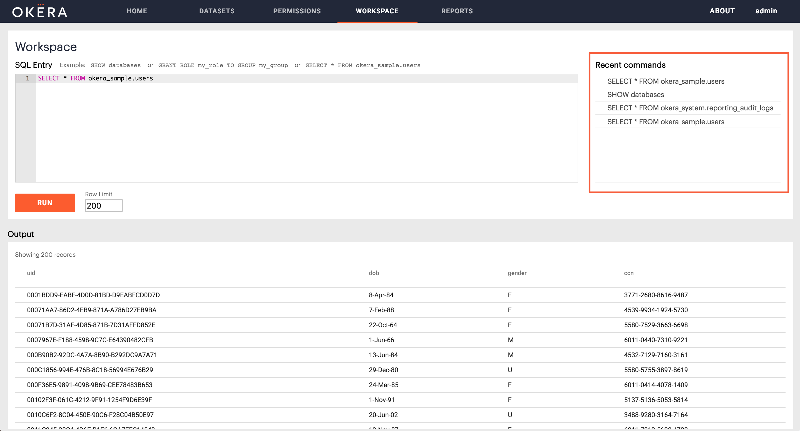

Okera Portal for Administrators
If you have ALL access on a particular object (database or dataset), you have access to its administrative features and are considered an admin for that object.
Tip: For basic features accessible to all Okera users, see Okera Portal for Analysts.
User Permissions Lookup
As an Admin you will also see a user/group input box on the Permissions page next to database and dataset. Here you can input any username or group name to understand their access on an object.
Note: if the user and group name are the same, the permissions lookup will default to looking up the user.

Depending on if that user has access or not to the specified object, you will see this information:
Access Summary
Gives a quick summary on if that has user access or not, what level of access, to what data, and if they have the ability to grant or not for that object. To understand the privilege levels please see Privileges.
Dataset Details Tab
Shows the dataset details, as well as the schema as that particular user would see it.
User Tab
If the user has access, this tab shows the list of groups responsible for that user’s access to the specified database or dataset.
Database Tab
Shows that user’s access to the specified database.
If the user only has access to specific datasets inside that database, it will show you a list of these.
Clicking on one of these datasets then shows the list of groups responsible for access to that specified database or dataset.
Permissions Tab
Shows the full list of groups that have access to the specified database or dataset.
Any group not in the available list has no access to the specified database or dataset.
Workspace
Note
The Workspace is only available to you if you have administrator permissions. The Workspace provides a powerful interface for performing DDL operations (for example, SHOW, GRANT, CREATE) for Admins, as well as running basic SQL queries.
The Workspace automatically authenticates as the logged in user, so there’s no need to provide any credentials.
Simply type your query and click the Run button to run it. Your output will be displayed in the output box on the bottom. To write multiple queries at once, make sure the queries are separated by semicolons.
For example:
CREATE ROLE role_one;
CREATE ROLE role_two;
Okera is compatible with most HiveQL DDL statements. To understand all supported SQL, visit Supported SQL.
Warning
If you leave the page, your query will continue to run.

Recent Command History
To the right of the SQL input, you will see a list of your recent commands.
Clicking on one re-stages the command in the input box ready to be used again.
Rerun or re-stage query
Next to previously run queries in the output box, you will see two icons.
- Rerun the query
- Re-stage the query (load it into query box)
Workspace Row Limit
Workspace’s terminal will only output MAX 500 rows per query.
Workspace’s terminal has a limit set to MAX 750 rows of queries in total. Therefore if workspace history contains more than 750 rows of table output, older history entries will be dropped.
Formatting Queries Using Keyboard Shortcuts
The editor in workspace supports the following keyboard keys and key combinations for formatting your queries and other SQL statements:
Tab Stops - To insert a tab stop in a line (in 4 character intervals), use the TAB key:
- If the cursor is at the beginning of the line, 4 blank spaces are inserted.
- If the cursor is in the line, enough blank spaces are added to reach the next tab stop.
Comments - To comment out a line (or multiple lines), place the cursor anywhere in the line (or highlight the desired lines), hold down the CMD (Mac) or CTRL (Windows) key and type a forward slash, /
Multiple Cursors - To add multiple cursors in the input box, hold down the CMD (Mac) or CTRL(Windows) key and click in each new location using the mouse left button or the touchpad.
Select Text Area - To select a text area, hold down the OPTION (Mac) or ALT (Windows) key. The cursor turns into a crosshair.
Click and drag using the mouse left button or the touchpad.
Run Commands - To run queries you can either click the Run button or hold down CMD (Mac) or CTRL(Windows) key and press the return key.